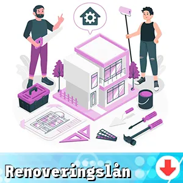

Vi jämför renoveringslån som du kan använda för att förvandla ditt hem till en drömplats!
Genom att du använder en skräddarsydd finansieringsmöjlighet går det att genomföra kostnadseffektiva renoveringar.
Här kan vi hjälpa dig att ta steget mot ett vackrare, mer funktionellt hem och utnyttja möjligheterna som dessa lån medför.
Här finns våra aktuella renoveringslån

Särskilda Renoveringslån
Frågor och Svar []
- Långivaren med högst beviljandegrad (exempelränta 9.02 %) för april 2025 är COOP
- För att beviljas ett renoveringslån behöver du vanligtvis en stabil inkomst, en god kreditvärdighet och en tydlig plan för hur du avser att använda lånet. Långivaren kan också kräva viss dokumentation, såsom inkomstrapporter och en beskrivning av renoveringsprojektet.
- Ja, vissa långivare kan ha restriktioner gällande vilken typ av renoveringar som lånet kan användas till. Vanligtvis inkluderar berättigade projekt förbättringar som ökar värdet på bostaden, medan kosmetiska förändringar kanske inte alltid täcks.
- I vissa fall kan långivare erbjuda lån som överstiger projektets kostnad, men det rekommenderas att endast låna vad som faktiskt behövs för att undvika överbelåning. Att låna mer kan leda till större räntekostnader och längre återbetalningstid.
- Villkoren för renoveringslån kan variera, men vanliga aspekter inkluderar lånets ränta, återbetalningstid och eventuella avgifter. Det är viktigt att noggrant läsa igenom villkoren innan du skriver på något avtal.
- Beloppet du kan låna beror på din ekonomiska situation, långivarens policy och projektets omfattning. Många långivare erbjuder lån från några tusenlappar upp till flera hundratusen kronor, baserat på dina behov och kreditvärdighet.
- Ja, vissa långivare kan ta ut dolda avgifter såsom uppläggningsavgifter eller administrationavgifter. Det är viktigt att granska avtalet noggrant för att förstå eventuella kostnader utöver räntan.
- Generellt sett är syftet med renoveringslån att finansiera specifika renoveringar, så att använda dem för att betala av andra skulder kan vara problematiskt. Det finns dock vissa alternativ, som samlingslån, som kan hjälpa till med detta.
- Tiden det tar att få tillgång till lånet varierar mellan långivare, men många erbjuder snabba utbetalningar efter att din ansökan har godkänts. Det kan ta från några dagar till flera veckor beroende på typ av lån och långivarens interna processer.
- Många långivare tillåter förtidsbetalningar, men vissa kan ta ut en avgift för detta. Det är alltid bra att fråga om dessa villkor innan du tecknar ett lån, så att du inte överraskas av extra kostnader senare.
- Som låntagare erbjuder renoveringslån fördelar som tillgång till snabbt kapital för förbättringar av din bostad och möjligheten att öka fastighetens värde. Dessa lån kan dessutom ge dig en chans att förbättra ditt hem utan att belåna det ytterligare.